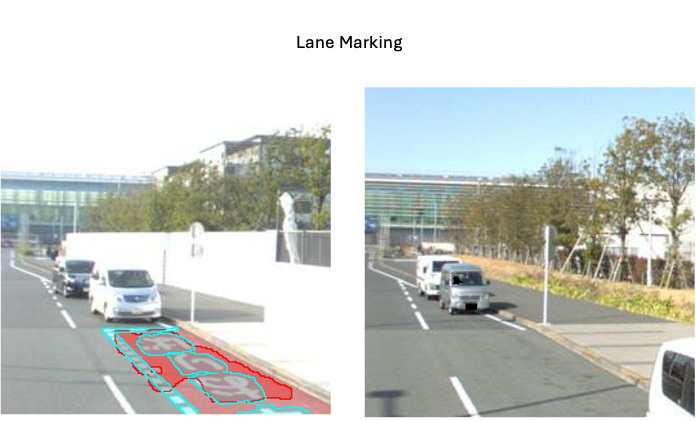
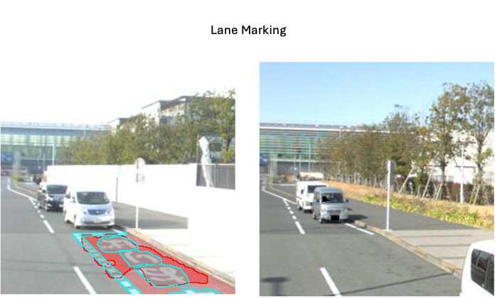

Abstract
Detecting changes between images is fundamental in applications such as infrastructure assessment, environmental monitoring, and industrial automation. Existing supervised models demonstrate strong performance but are inherently limited by the scope of their training data, requiring retraining to recognize novel changes. To overcome this limitation, we introduce a novel change detection task utilizing textual prompts alongside two potentially unaligned images to produce binary segmentations highlighting user-relevant changes. This text-conditioned framework significantly broadens the scope of change detection, enabling unparalleled flexibility and straightforward scalability by incorporating diverse future datasets without restriction to specific change types. As a first approach to address this challenge, we propose ViewDelta, a multimodal architecture extending the vision transformer into the domain of text-conditioned change detection. ViewDelta establishes a robust baseline, demonstrating flexibility across various scenarios and achieving competitive results compared to specialized, fine-tuned models trained on aligned images. Moreover, we create and release the first text-prompt-conditioned change detection dataset, comprising 501,153 image pairs with corresponding textual prompts and annotated labels. Extensive experiments confirm the robustness and versatility of our model across diverse environments, including indoor, outdoor, street-level, synthetic, and satellite imagery.
ViewDelta Inference Examples
Predictions are in red, and ground truths are in blue.


 



Quantitative Results
* ViewDelta is a generalized model, not tailored to these specific datasets. Its performance is evaluated against fine-tuned models designed for each individual dataset.


BibTeX
@article{varghese2024viewdelta,
title={ViewDelta: Text-Prompted Change Detection in Unaligned Images},
author={Anonymous ICCV Submission},
journal={Anonymous ICCV Submission},
year={2025}
}